- Módulo: Sistemas Operativos
- Título del trabajo PDC WinServer
- Componentes del grupo: Isabel Quintero Sánchez
- Curso Académico: 2013/2014
- Fecha de entrega: 8 de Abril de 2014
Instalamos Windows 2008 Server Enterprise y como servidores DNS pondremos al propio Windows2008Server (127.0.0.1), y a FRY (172.16.1.1).
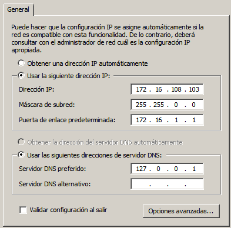Controlador de dominio
Instalamos el DA(Directorio Activo) para guardar la información de nuestro dominio.Después, como cada PDC se identifica con su nombre de dominio, el cuál debe ser único, elegiremos un nombre corto para el nuestro. ("QUINTERO1W.IDP")
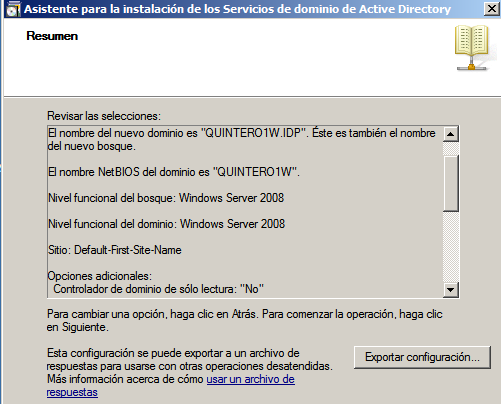Crear los siguientes grupos de dominio, y usuarios de dominio:
Primero creamos los grupos
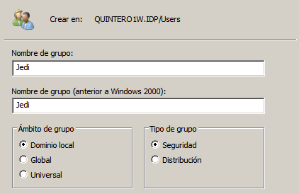 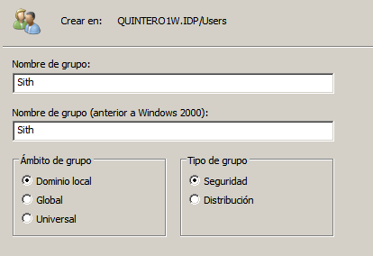Y, en segundo lugar unimos los usuarios a sus respectivos grupos.
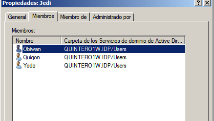 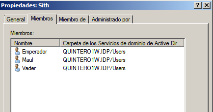Instalamos una MV (W7 Enterprise) y luego la clonamos que actuarán de clientes o equipos del dominio.

Cada cliente Windows7 debe tener un nombre de equipo sencillo. Para el primero: "Quintero2a" y para el segundo: "Quintero2b"
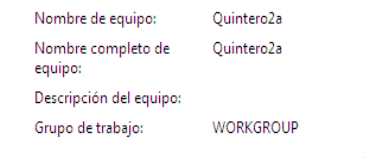 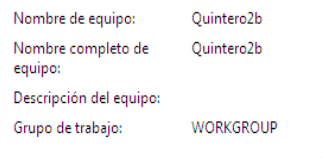El cliente debe tener como DNS1 la IP del PDC, y como DNS2 a otro servidor DNS (como por ejemplo a FRY 172.16.1.1).
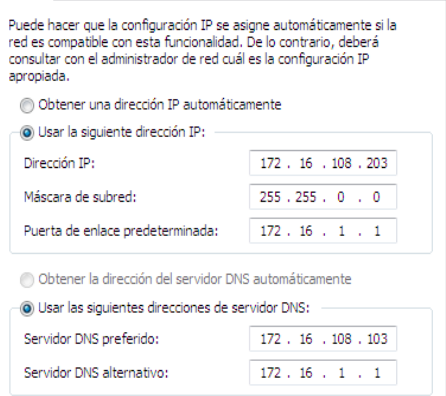
Ahora vamos a unir el equipo cliente al dominio.
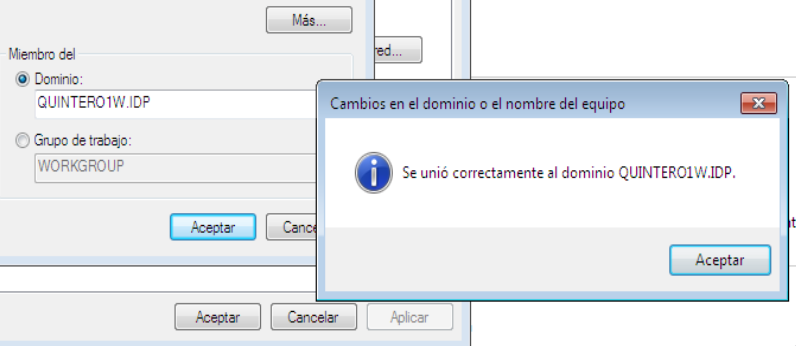 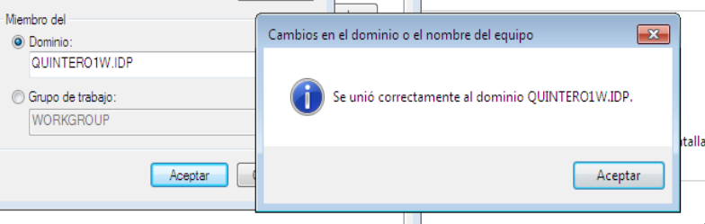Hacemos las comprobaciones.
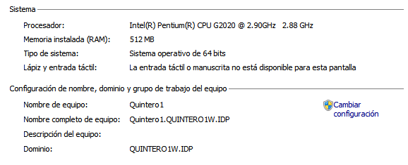 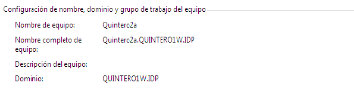 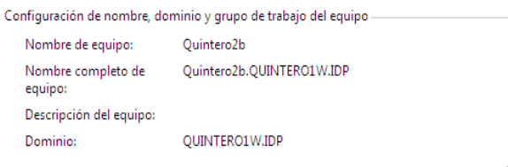Creamos las siguientes carpetas, que usaremos para guardar los perfiles:
Creamos una carpeta compartida llamada Perfiles y compartirla con el nombre "Perfiles$"; a continuación pulsaremos sobre el botón "Permisos" y hacemos que el usuario "Todos" tenga los permisos "Control Total", "Cambiar" y "Leer" para que cada usuario pueda grabar su perfil en su carpeta, de ahí el hecho de incluir el "$" en el nombre asignado al recurso para que no sea visible por los usuarios, porque debemos tener en cuenta que cualquier usuario podría grabar lo que quisiera en la raíz de la carpeta "Perfiles" si sabe de su existencia; esto nos generaría un grave problema de seguridad.
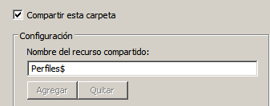 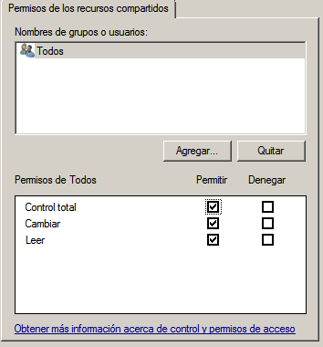Crear perfiles móviles para los "jedi". Modificamos los usuarios "jedis", para que cada uno apunte su ruta de perfil. De esta forma dichos usuarios, tendrán perfiles móviles.
YODA
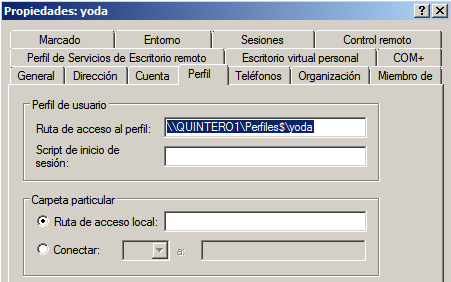OBIWAN
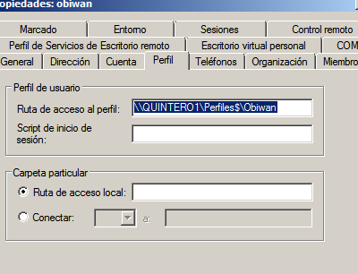
QUIGON
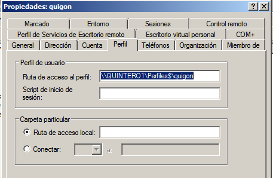Modificar todos los usuario "sith" para que apunten al mismo perfil. Todos los usuarios del grupo "sith" tendrán perfiles obligatorios.
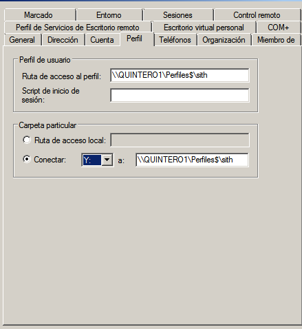 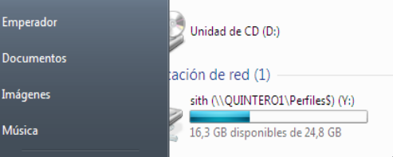Iniciamos sesión en "QuinteroA" y modificamos o hacemos cambios en el escritorio, creamos alguna carpeta o archivo para observar que siguen los cambios al iniciar sesión en "QuinteroB".
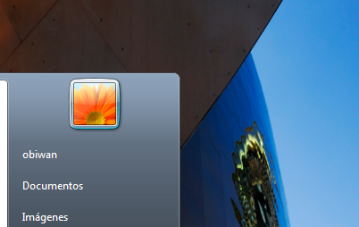 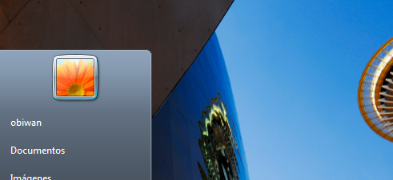Y comprobamos que efectivamente,al intentar entrar en algun usuario fuera de su hora programada no nos deja entrar.
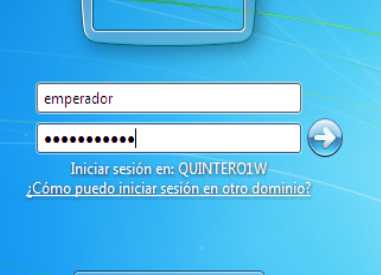 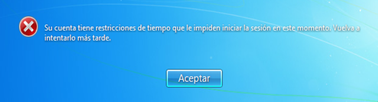